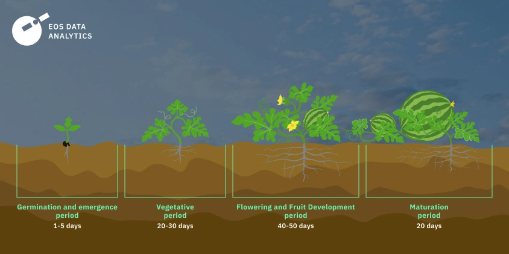
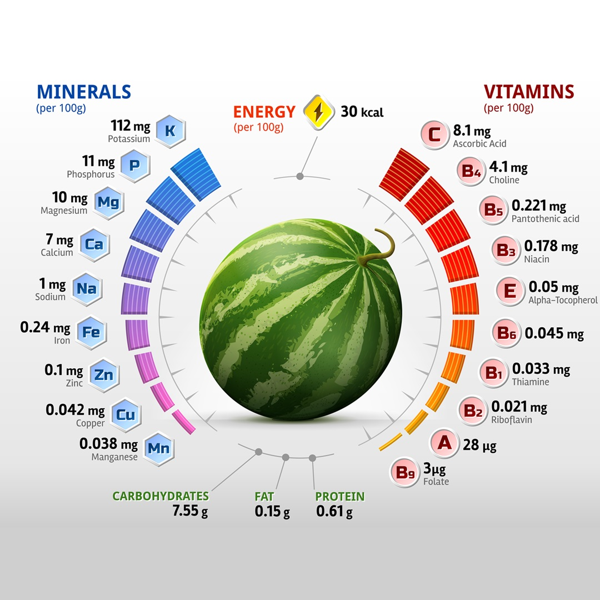
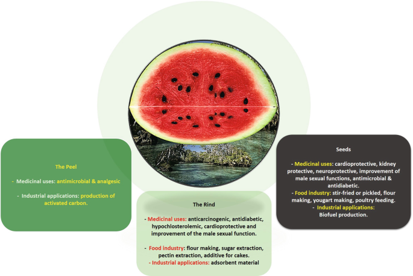

Watermelon
Types of Watermelon:
Seedless Watermelon:
Also Known As: Triploid watermelon.
Description: Seedless watermelons are popular for their convenience and sweet flavor.
Uses: Commonly consumed fresh, in fruit salads, or as juice.
Growth Conditions: Prefers warm temperatures and well-drained soil.
Characteristics: Typically round or oval with a smooth rind and sweet, juicy flesh.
Seeded Watermelon:
Also Known As: Traditional watermelon.
Description: Seeded watermelons are the classic variety, known for their large seeds and sweet taste.
Uses: Used in fresh consumption, desserts, and beverages.
Growth Conditions: Thrives in warm climates with plenty of sunlight.
Characteristics: Often larger than seedless varieties and can have a variety of flesh colors.
Mini Watermelon:
Also Known As: Personal watermelon.
Description: Mini watermelons are smaller in size, making them easy to handle and consume.
Uses: Ideal for small households or picnics.
Growth Conditions: Requires similar conditions to larger varieties but matures faster.
Characteristics: Sweet and juicy, often with a thin rind.
Yellow Watermelon:
Also Known As: Yellow-fleshed watermelon.
Description: Yellow watermelons have a unique color and a sweet, honey-like flavor.
Uses: Consumed fresh or in fruit salads.
Growth Conditions: Grows well in warm climates with adequate moisture.
Characteristics: Similar in size to traditional watermelons but with a distinct yellow flesh.
Growing Conditions
Climate:
Temperature:
Germination Stage: Watermelon seeds require a soil temperature of around 21°C to 35°C for optimal germination.
Vegetative Growth Stage: Prefers warm temperatures between 25°C and 30°C.
Reproductive Stage: As watermelons transition to reproductive stages, temperatures between 25°C to 35°C are favorable.
Harvest Stage: Warm and dry conditions are ideal during harvest to ensure the watermelons are mature and reduce moisture content, preventing spoilage.
Rainfall and Moisture:
Moderate Rainfall: Watermelons require moderate rainfall, generally between 500mm to 800mm per growing season. Rainfall distribution should be well-timed to ensure sufficient moisture during key growth stages.
Irrigation: In regions where rainfall is insufficient, irrigation is crucial, especially during flowering and fruit development. Over-irrigation should be avoided to prevent waterlogging.
Drought Sensitivity: Watermelons are sensitive to drought, and consistent moisture is essential for optimal fruit size and sweetness.
Sunlight:
Watermelons require full sunlight for at least 6 to 8 hours a day. Adequate sunlight is essential for photosynthesis, which drives plant growth and fruit development.
Cloudy conditions can reduce photosynthetic activity and yield.
Humidity:
Watermelons prefer moderate humidity levels. High humidity can create conditions favorable for fungal diseases, impacting yield and quality.
Proper field management practices can help manage disease pressure in high-humidity conditions.
Wind:
Mild winds can aid in pollination, but strong winds can cause lodging, making harvesting difficult.
Windbreaks can be used to protect watermelon fields from strong winds, maintaining plant stability.
Soil:
Soil Type:
Loamy Soil: Watermelons thrive best in loamy soils, which provide good drainage while retaining moisture.
Sandy Soil: Sandy soils are also favorable, offering good drainage and ease of root penetration.
Clayey Soil: Clayey soils can be suitable if well-drained.

Soil Structure:
Well-Drained: Watermelons require well-drained soil to prevent waterlogging.
Good Aeration: Proper soil aeration is essential for root respiration and overall plant health.
Soil Fertility:
Nutrient-Rich: Watermelons grow best in fertile soils with adequate levels of nitrogen, phosphorus, potassium, and micronutrients.
Organic Matter: The presence of organic matter enhances soil fertility and supports beneficial microorganisms.

Soil pH:
Optimal pH Range: Watermelons prefer a slightly acidic to neutral soil pH, typically between 6.0 and 7.0.
pH Management: Lime can be added to acidic soils to raise the pH, while sulfur can be used to lower the pH of alkaline soils.
Soil Preparation:
Plowing and Tilling: Proper soil preparation involves plowing and tilling to create a fine seedbed.
Leveling: Leveling the field ensures uniform irrigation and prevents waterlogging.
Soil Conservation:
Erosion Control: Practices such as contour plowing and maintaining ground cover help prevent soil erosion.
Crop Rotation: Rotating watermelons with other crops can improve soil health and reduce pest buildup.
Water Requirements:
General Water Needs:
Watermelons require a total of approximately 500-800 millimeters (mm) of water throughout their growing season, depending on the variety, climate, and soil conditions.
Critical Growth Stages:
Germination: Ade quate soil moisture is necessary for seed germination, typically requiring around 25-50 mm of water during this stage.
Seedling Stage: Consistent moisture is crucial for young plants, needing about 50-75 mm of water to establish strong roots.
Flowering Stage: During flowering, watermelons require increased moisture, approximately 75-100 mm, to support fruit set and development.
Fruit Development Stage: This stage is critical for yield, requiring around 100-150 mm of water to ensure proper fruit filling and maturation.
Pre-Harvest Stage: Reducing water supply before harvest helps in drying the fruit, making them easier to pick and improving quality.
Drought and Stress Management:
Drought-Resistant Varieties: Plant drought-resistant watermelon varieties in regions prone to water scarcity.
Deficit Irrigation: Implement strategies where water is applied during the most critical growth stages to manage water resources during drought conditions.
Planting and Seeding:
Planting:
Watermelons can be sown directly in the field or started indoors and transplanted. They are typically sown in the spring when soil temperatures are warm enough for germination.
Seeding Rates:
The seeding rate varies but generally ranges from 10,000 to 20,000 seeds per hectare, depending on the variety and planting method.
Nutritional Value:
Hydration:
Watermelons are composed of about 92% water, making them an excellent choice for hydration.
Vitamins and Minerals:
Watermelons are rich in vitamins A and C, as well as minerals like potassium and magnesium.
Antioxidants:
Watermelons contain antioxidants such as lycopene, which may help reduce the risk of certain diseases.
Uses:
Food Products:
Watermelons are commonly consumed fresh, in fruit salads, smoothies, and desserts.
By-Products:
Watermelon rind can be pickled or used in stir-fries, and watermelon juice is popular in beverages.
Environmental Impact and Sustainability:
Watermelon cultivation can have environmental impacts, including water usage and pesticide application. Sustainable practices such as drip irrigation, organic farming, and integrated pest management can help minimize these impacts. Implementing these practices can improve soil health and promote biodiversity.